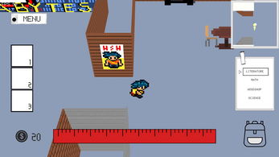

As I worked on the project I was able to combine quick think on my feet with the use my Java and C# knowledge as well as searching for c++ specific knowledge to put together the project. By doing this I was able to make a basic game where the player would spawn into a 15X15 map with various green destructible boxes scattered around with red indestructible boxes serving as walls. The goal is that the player is attempting to control their fast drill to destroy as many of the green boxes as possible to increase their points before the timer runs out and then proceed to the next level. With every few levels the amount of time left for the player is reduced until they might not have enough time to complete a lot of the maze.
Something I am proud about in the project is the level creation method as it is set up in a way that would allow it to create a new level each time the player goes to the next level or starts a new game. It is set up with a 2d array data type position which contains a x and y pixel position as well as a string with the object that is contained in the position. I proceed to go through the 2d array and place all of the walls that the player cant pass through both around the border and in the middle of the map itself. I proceed to determine if the current Position contains the string "Empty" to then return a number using a random method C++ has as part of their library and the current time as a seed to help with the randomness. If the number turns out to be less than 1/4 the max number that the seeded random can return (In this case is 32767) it will then set the Position as a breakable wall that the player can break to gain points and continue on with the level. Because of the chances that two people will start a new game or level at the same time it allows for the level creator the ability to seemingly create a new level each time.
One way I could improve on the random number generator is by taking in account the current level, how many destructible walls have already been created in the level and the current position that the level created is looking at. This would allow for even more random levels as the chances that the combination of all these different variables can be achieved together would be difficult to achieve and allow for each new level someone plays to be unique to their playthrough.
My day-to-day as the programmer involved working with VR, ensuring that the gameplay features the team implemented worked as intended, and updating where necessary. I also was in charge of implementing the UI system in VR and the unique ways one can do so with VR.
Meanwhile, as the Technical lead for the project, I was in charge of breaking down the tasks for the distinct mental health conditions I and the other programmer were implementing throughout the project. This was an exciting challenge as this was the first time anyone in the group was working with VR, a skill I've wanted to improve. At the start of the project, as the design team would confirm that certain mental health rooms were finished, I would estimate to the best of my abilities the amount of time needed to complete the task and split them between the other programmer and me. When determining the amount of time it would take to complete the different times correctly, I base it off past experiences working on game and unity projects and then add some extra time as leeway to accommodate better the fact that no one in the group had previous experience in VR, and I had the most experience in Unity from the team. Meanwhile, when dividing up the tasks, as the other programmer didn't have much Unity experience at the start of the project and was taking a university intro class in Unity at that time, I decided to start him off with some of the more straightforward tasks that I know he would benefit from it as he would have some time to learn better the ecosystem of using Unity as well as Github as our git. As he became more comfortable in Unity, I gave him more tasks, and by the end, he was in charge of half of the rooms in the project.
After this project, I was able to learn that when it comes to working with VR, it required even more time for many of the tasks than I had initially expected. This project has allowed me to understand better that working in collaboration with other people and on projects with components that I dont have as much experience in might mean having some extra leeway for possible challenges that arise over time.
During my third year of university, I took a year-long course where 12 other students and I worked together to create a project. We decided to make a 2.5d simple dungeon game with the player trying to complete the 9th grade, which can be done by fighting enemies or answering questions related to typical class material people would learn during that school year. Working on a full-year game allowed us to learn valuable techniques to organize everyone's time and keep everyone updated with progress on what everyone worked on. During the project, I was in charge of the four people technical team, which allowed me to learn how to manage a small group and split tasks as best as possible depending on people skills. Initially, it wasn't straightforward in what areas people should work on as many of the group were learning how to work with Unity for the first time. However, since we planned on making a relatively simple game, we knew that the programmers with experience could efficiently work on the mechanics. At the same time, everyone else could spend time learning as much about working with Unity. So, after a while, we divided the tasks into UI, art implementation, and general programming and gave each job to someone. This allowed, for the most part, to have people only need to learn specific aspects of Unity without feeling overwhelmed knowing all of the different things of Unity. At the same time, it helped reduce the chances of merge conflicts occurring when pushing commits. Though because it was our first time working as a group, we only had little experience programming in similar styles, which meant that, at times, people needed to ask the other programmers how the code they had written was meant to do.
During the project, we also decided to have weekly agile meetings where everyone discussed what everyone worked on for the past week and our plans for the following week. This allowed everyone to have a rough idea of the progress being made on the game over time. In addition, consistently talking about what we were working on allowed us to recognize specific problems as they were forming since if we noticed multiple people having the same trouble or if someone came with the same problem for various meetings, then we could work together to solve it before it becomes worse.